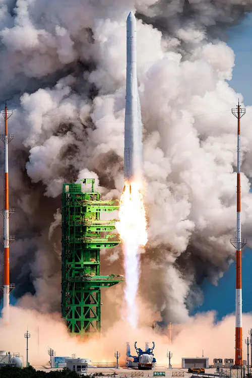
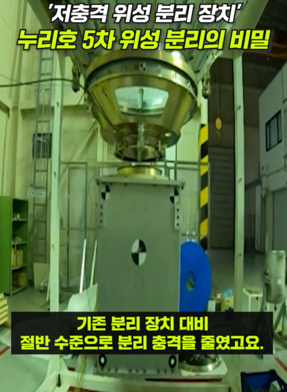
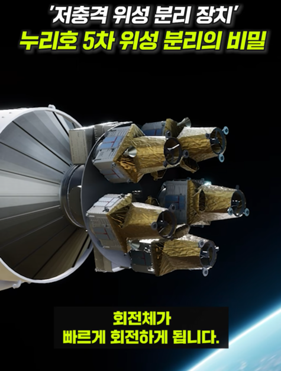
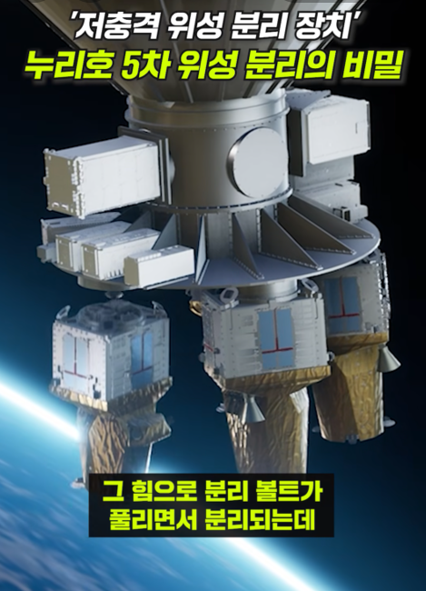
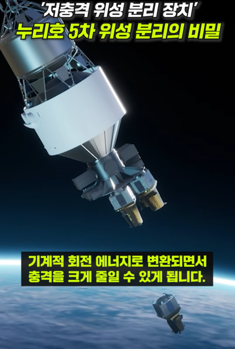

곧 3일뒤인 10월 7일 누리호 5차 발사가 예정되어 있음.
그리고 오늘 공식에서 올라온 영상.




.......?
분리 방향이 좀 이상한거 같.....

곧 3일뒤인 10월 7일 누리호 5차 발사가 예정되어 있음.
그리고 오늘 공식에서 올라온 영상.




.......?
분리 방향이 좀 이상한거 같.....
그렇게 말 하면 안되고!
그거야 당연히 위성 분리 방향이 원래 아래쪽이니까 그렇지
다탄...크흠.....위성분리 맞죠?
당연하죠 우주연구원들을 뭘로보는거예요? 거긴 꿈과 희망밖에 없어!
북진의 꿈과 만주벌판의 희망…
한반도 통일의 꿈…
꿈(통일) 과 희망(압도적화력)
지금 우리 전차가 만주를 달리고있다고!!!
이번 실험도 성공적으로 실패다
지구를 향해...한화...
그러니까 우리도..
그렇게 말씀하시면..
다들 눈치 챙겨라
국가기밀 누설하면 안돼
그렇게 말하면 안 되고
아하 탄두가 3개 라는거죠??
지구를 향한 기술을 연구합니다-한화에어로스페이스
분리 장치 형태가 내가 생각하는 그거 아니지?? 아니겠지. 그냥 분리 장치겠지.
분리하는 김에 뭐 같이 떨어뜨려야하는거 있으면 뭐...^^
뭔가를 소형화해서 같이 발사하면 좋을것 같아요
???: 하하하 분리추진체에 친환경 기술이 적용되어 있습니다. 회수를 하기 위해 지정한 위치에 정확하게 떨어질 수 있도록 되어있답니다 하하하
<<토니트루스의 창>>
ㅋㅋㅋ 한국형 미니트맨3
강선을 넣으면 총알이 더 정확하고 세게 나가는 원리인거죠?
원하는 곳에 정확히 떨어지지만
어허 그런거 아닙니다
뭐? 신의지팡이??? 어허 그런거 아니야
어허~
당연히 전혀 그럴 의도로 만든 건 아니겟지만 저기에 클러스터 탄두 장착하면 효과 개쩔거 같은데 님들 생각은 어떰
먹어랏 민주주의!!
이젠 숨길생각도 없는거냐고 ㅋㅋ
텅스텐..?
어허 이사람들 과학기술은 순수한것이에오
어 이거 신의 지팡이...
엔진이 유도되지 말란 법이 있을까?
분리된 인공위성이 알 수 없는 이유로 지구에 진입하는 사고가 발생될 수도 있겠네;;;
걱정스럽구만 그런 실패가 있어선 안 될텐데
MIRV의 핵심기술인 Post Boost Vehicle 기술까지 갖춰버렸구나 ㄷㄷㄷ
다중발사인공위성인데거참자꾸말을이상하게하시네
네 다탄두위성이요?
다.탄.두.투.하
그래 잘하자
실수로 떨어트렸는데 북한위었어요